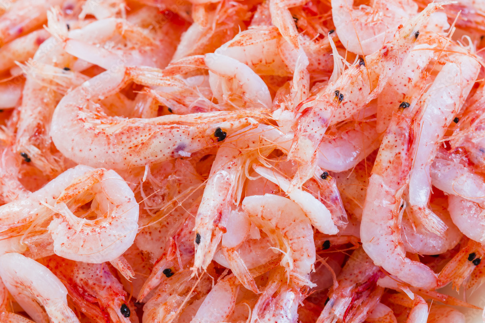

私、内藤静子(50)は静岡市で生まれ育ちました。子どもたちが巣立ち何か新しいことを始めたいと思った時に、夫に食堂を開くのはどうかとすすめられました。
昔から料理が好きで、沢山の人に自分の料理を食べてもらいたい、静岡の味を伝えたいと思い『しずおか食堂』をオープンすることにしました。


しずおか食堂は『静岡の味を多くの人へ届ける』をコンセプトに、静岡県産の食材を使った馴染みのあるお
料理や、桜えびのかき揚げやしらす丼など静岡ならではのメニューを提供することで、地元の人はもちろん県外の方々にも静岡の味を届けたい、静岡の味を楽しんでもらいたいとの思いがあります。
用宗にある知人の古民家を借りて2年前にオープンしました。静岡のあたたかさが伝わるような店内の雰囲気づくりをこころがけています。


静岡県は温暖な気候と海や山に恵まれ、新鮮な海鮮や静岡茶、みかんなど静岡ならではの地場の食材が豊富に揃っています。
このような静岡ならではの食材を使って、静岡の味の魅力を伝えられるように調理方法は工夫しています。また、食材は季節に合ったものや旬のもの、鮮度の高いものを選ぶようにしています。野菜はお店の敷地内の畑で一から丁寧に育てたものを使っています。